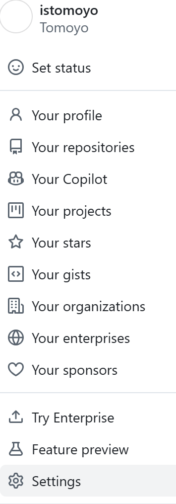
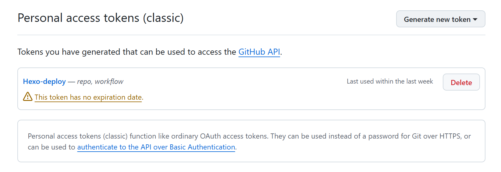
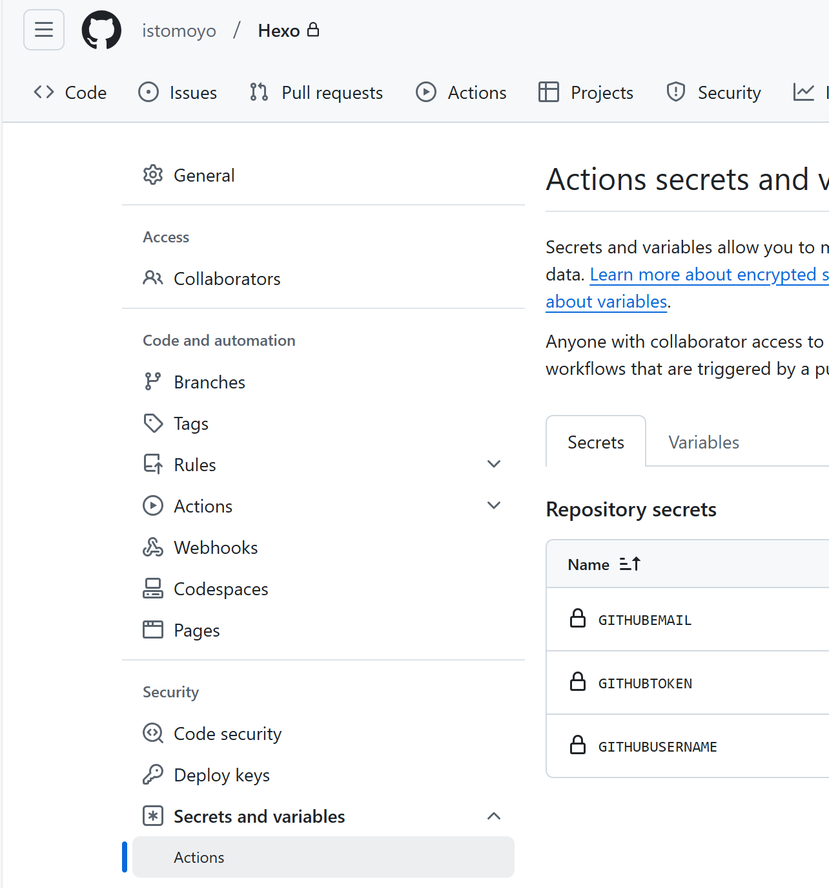
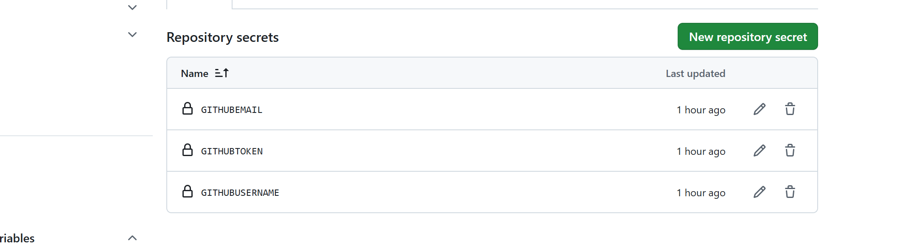
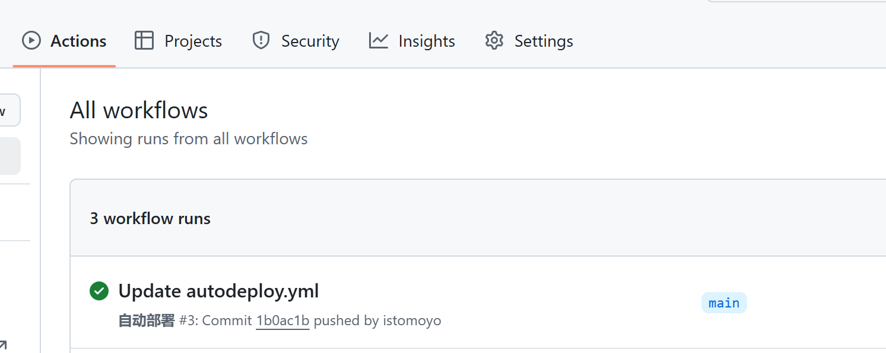

前言
之前一直是本地生成静态页面，然后deploy到仓库里。但觉得这样不够优雅，并且想要临时修改的话就只能在电脑上修改，其他移动设备上无法临时修改。所以参考https://akilar.top/posts/f752c86d/ Akilar大佬的博客，对我的博客进行修改，也从一个小白的视角进行记录。（这篇文章就是采用新的部署方式）
准备
准备两个仓库，一个private，一个public。
private用于存储hexo源码，（为什么是private?因为要用到token信息）。用于监测push，然后把生成的静态文件推送到这个public的仓库里。
public起名istomoyo(你的用户名).github.io。
获取Token
[Github->头像（右上角）->Settings->Developer Settings->Personal access tokens->
在这Token(classic)

Generate new token

名称随便起，时长选择永久，勾选workflow和repo
获取生成后的token,临时保存一下（忘记就只能重新生成）
配置private仓库
private（就是你存放hexo源码）
新建.github/workflows/autodeploy.yml文件。
1
2
3
4
5
6
7
8
9
10
11
12
13
14
15
16
17
18
19
20
21
22
23
24
25
26
27
28
29
30
31
32
33
34
35
36
37
38
39
40
41
42
43
44
45
46
47
48
49
50
51
52
53
54
55
56
57
58
59
60
|
name: 自动部署
on:
push:
branches:
- main
release:
types:
- published
jobs:
deploy:
runs-on: ubuntu-latest
steps:
- name: 检查分支
uses: actions/checkout@v2
with:
ref: main
- name: 安装 Node
uses: actions/setup-node@v1
with:
node-version: "12.x"
- name: 安装 Hexo
run: |
export TZ='Asia/Shanghai'
npm install hexo-cli -g
- name: 缓存 Hexo
uses: actions/cache@v1
id: cache
with:
path: node_modules
key: ${{runner.OS}}-${{hashFiles('**/package-lock.json')}}
- name: 安装依赖
if: steps.cache.outputs.cache-hit != 'true'
run: |
npm install --save
- name: 生成静态文件
run: |
hexo clean
hexo generate
- name: 部署
run: |
cd ./public
git config --global init.defaultBranch main #对比Akilar大佬的文章,我新增了这一行，如果你也都是main分支的话
git init
git config --global user.name '${{ secrets.GITHUBUSERNAME }}'
git config --global user.email '${{ secrets.GITHUBEMAIL }}'
git add .
git commit -m "${{ github.event.head_commit.message }} $(date +"%Z %Y-%m-%d %A %H:%M:%S") Updated By Github Actions"
git push --force --quiet "https://${{ secrets.GITHUBUSERNAME }}:${{ secrets.GITHUBTOKEN }}@github.com/${{ secrets.GITHUBUSERNAME }}/${{ secrets.GITHUBUSERNAME }}.github.io.git" main:main
#git push --force --quiet "https://${{ secrets.TOKENUSER }}:${{ secrets.CODINGTOKEN }}@e.coding.net/${{ secrets.CODINGUSERNAME }}/${{ secrets.CODINGBLOGREPO }}.git" main:main #coding部署写法，需要的自行取消注释
#git push --force --quiet "https://${{ secrets.GITEEUSERNAME }}:${{ secrets.GITEETOKEN }}@gitee.com/${{ secrets.GITEEUSERNAME }}/${{ secrets.GITEEUSERNAME }}.git" main:main #gitee部署写法，需要的自行取消注释
|
需要注意的是，2020年10月后github新建仓库默认分支改为main。注意你仓库中是什么分支。
都是main分支的话，需要加上
1
| git config --global init.defaultBranch main
|
使得所有新初始化的仓库默认分支名称为 main 而不是 master。
佬的博客下面的评论也提到了。
之后需要自己到仓库(private的那个)的Settings->Secrets->actions 下添加环境变量

需要添加三个变量(点击右边的New reposistory secret添加)
| Name |
Value |
是什么 |
| GITHUBUSERNAME |
istomoyo |
github用户名 |
| GITHUBEMAIL |
*** |
github绑定的邮箱 |
| GITHUBTOKEN |
*** |
刚才让你保存的token |

细微部分
在你的主题文件夹下(themes/butterfly/.git),我的是butterfly。删除或者移动他，否则git不会让你push的。
添加屏蔽项（在.gitignore文件中）
为了减少上传的文件，加快提交速度。（这个可以根据自己的情况来决定怎么写）
1
2
3
4
5
6
7
8
9
10
| .DS_Store
Thumbs.db
db.json
*.log
node_modules/
public/
.deploy*/
.deploy_git*/
.idea
themes/butterfly/.git
|
之后再推送到对应的仓库就ok了。
参考
1
2
3
| git add .
git commit -m "github action update" #引号内的内容可以自行更改作为提交记录。
git push origin main
|
可以在对应github action查看部署情况

这样应该就ok了。可以试试看